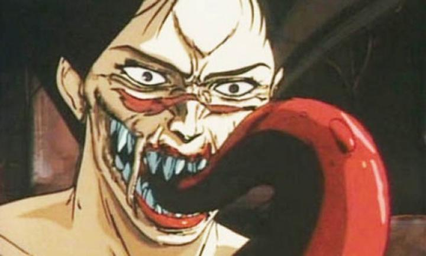

Disclaimer: This review covers the content of the Discotek 2025 Bluray release, which includes the 1989 feature film "Urotsukidoji - Legend of the Overfiend," and the three-episode OVA series it is based on ("Birth of the Overfiend," "Curse of the Overfiend," "Final Inferno," released from 1987 - 1989). ... to be clear, I don't typically review content like this ("porn"). But in anime, there are a few such works (see "Kite" or "Mezzo Forte") that have merit or are at least worth discussing, either for their animation, direction, or place in popular culture. And in the sphere of anime, "Urotsukidoji" was particularly famous and infamous for it's sexual and violent content. At the time I began collecting home media, it was also difficult to get a decent copy of, which I had no concerns with. Even the voice actors, both in English and Japanese, were horrified with the content, such that they'd either be listed in pseudonyms, or not listed at al.But Discotek worked their magic again in 2025, releasing a restored Bluray of the movie "Legend of the Overfiend," and its three associated OVA episodes (the OVA's were standard-definition and Japanese-subtitled only on the disc). For all the respect Discotek's reputation has, they've proven not to be scared of filthier material, but similar to my personal tastes, usually only when some historical or cultural merit is present. Indeed, the disc has a 16-page text-written essay describing the history of the film and OVA, well worth a read, comparing the film's significance to the likes of "Akira" and "Vampire Hunter D," and discussing its context among Japan's history in the over-the-top violent and explicit direct-to-video market. In tiny font, a subtitle on Discotek's packaging lists this as "Collection 1": further research tells me there are actually five separate OVA series, with 13 episodes total, plus a slightly newer 3-episode remake, among other content in the sprawling "Urotsukidoji" franchise. No thank you. But I sat down to watch Discotek's release of the first film. For science. The story is of the fulfillment of a prophecy. There exist three parallel worlds, one of which is the human world, and two worlds of demons. It is said that a great demon god, called the Chojin, is reborn to remake the worlds every 3,000 years, until a better world of peace for all kind exists. Amano is a demon in human form, tasked to find the Chojin among the human world, to bring about his coming and the creation of a peaceful realm. His sister and a floating naked imp help him. After centuries of searching, he thinks he's finally found the great Chojin, only to realize too late that his coming will destroy the current worlds as he knows them (well, duh, that seemed implied... anyway...)."Urotsukidoji" is first and foremost a horror, or dark fantasy, tale. Even moreso than an erotic adventure, despite sexual content pervasively filing the runtime. Horrific demons leave piles of corpses and entrails in their wake. Demons with teeth, horns, and tentacles protruding from all over their body. Often all three protruding from their groin in both horrific and unintentionally funny ways. Demons force themselves into women, almost aways under their duress. And usually ending with their bodies ripped apart. Even by modern standards, I was shocked at how "far" some of the sex scenes go, doing a double-take and asking "did I just see that?" The animation is rough enough that it's not always clear, but in content like this, it's safe to just assume "yes, I did." Creative novelty aside, the darker context makes it hard to fathom anyone enjoying this for titilation. It's horror with sex seeped into its veins, like a sald smothered in dressing - you'd partake in it because you wanted the salad, not because you were craving the taste of vinegrette.  And plenty of people are passionate about dark fantasy. Is the story in this one any good? Not particularly, although I admit it improves towards the end. It's confusing up until the final minutes on which demons are good and which are bad, and what the Chjoin's place is in it all, and although that's by design, it's unsatisfying for most of the runtime. The ending, including the promise of world destruction, feels right in line with Go Nagai and his "Devilman" series (knowing and preparing mentally for this helps, but I'm not a fan of sad endings with total annihilation). It's that ending, and the bookend of this being a grand prophecy, that gives at least some poignancy to the story. But I'm making excuses for a plot that's not well written, and is just an excuse for the extreme sex and violence, in one scene after another. What's more, I had a problem with the whiplash in tone. Amano and his collegues look and act like they've stepped in from a completely different shonen anime aimed at 10 year olds. There's a few scenes at high schools with visuals and music that look like your common 80's slice-of-life comedy anime. The human ultimately found to be hosting the Chojin is a hapless pervert, and its his sincere romance with a love interest that drives the heart of the story... so this is a romance too? All these elements just don't feel like they work with each other here, and it's a bit of a mess. As for the quality of the production, it'll depend on how you feel about other 80's anime. By the standards of the time, the animation quality is quite good, and old school fans should be impressed, even if character faces aren't always on model. Character designs are OK, again by standards of the time... Amano looks like Naruto's loser cousin, but that was and is the common fashion for anime protagonists. Even though I personally prefer the quality of most-2003 digital anime, there's clearly a lot of detail and attention in monster design and environment destruction. I usually prefer English dubs, but for both the age and genre of anime like this, dubs have a bad reputation. That's pretty well true here too: the dub ain't great (in some moments, it's laughably bad), and I switched to the Japanese dub pretty quickly. The music is this generic eletronic synth stuff that could have been ripped from an arcade video game. While the feature film is plenty explicit, it never goes quite as far as showing penetration or genitalia on screen (the movie did screen at prominant film festivals when it first released, so that editing at minimum was required). The OVA's on the other hand, more than 30 minutes longer in total (including recap scenes), do, although the copies on the Bluray do have fog effects blurring those scenes slightly. Those extended scenes are surprisingly detailed and more... effective. Even with poorer picture quality than the remastered film on the Bluray, the OVA is the better version to watch, and I'd maybe recommend the film if you wanted to rewatch the material afterwards in a shorter runtime, because you found the story so memorable (?).Fine, my curiousity is sated now. I've seen "Urotsukidoji - Legend of the Overfiend." And it's an interesting work. But it isn't good. And regardless of your personal reason to be interested it it (no judgements here), you won't be satisfied. Or rather, it overdelivers in some ways that you might be disgusted. But that's what 80's OVA are famous for, and if that violence excites you... this fits along them.
- "Ani" More reviews can be found at : https://2danicritic.github.io/ Previous review: review_Unicorn_Wars Next review: review_Urusei_Yatsura_-_Beautiful_Dreamer